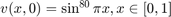

HW 5.6.5
Contents
Initial-boundary-value Problem
- 
- One Analytic Solution:
Numerical Solution
ts = [0.0, 0.12, 0.2, 0.8]; % #1: $M = 20, \Delta t = 0.04$ dx = 0.05; dt = 0.04; [u, v, X, T] = solver_5_6_2(dx, dt, 1); plotSlice_5_6_1(ts, dt, u, v, X, T); % #2: $M = 100, \Delta t = 0.008$ dx = 0.01; dt = 0.008; [u, v, X, T] = solver_5_6_2(dx, dt, 1); plotSlice_5_6_1(ts, dt, u, v, X, T); % #3: $t_slice = [0, 5, 10, 20]$ ts = [0, 5, 10, 20]; [u, v, X, T] = solver_5_6_2(dx, dt, 20); plotSlice_5_6_1(ts, dt, u, v, X, T);